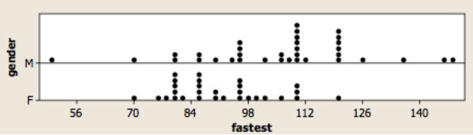

Taller 1#
El propósito de este taller es prácticar los conceptos básicos de probabilídad y estadística vistos en clase. Los estudiantes pueden trabajar en grupos pero deben entregar sus respuestas de manera individual. Se sugiere resolver y entregar los problemas a mano.
El taller se debe entregar el Lunes 18 de Agosto antes de la media noche. Deben enviarlo a los correos del equipo pedagógico con el siguiente asunto: “Taller 1 Microeconometría”. Recuerden incluir su número de estudiante en el correo.
Pregunta 1#
Verifique si la función dada por
cumple las propiedades de una distribución de probabilidad para la variable discreta \(X\), que toma valores en \(\{1, 2, 3, 4, 5\}\).
Pregunta 2#
Suponga que la variable discreta \(X\) tiene la siguiente función de distribución
Calcule \(F(x), E(X), E(X^2),\) y \(V(X)\)
Pregunta 3#
La función de densidad de probabilidad de la variable aleatoria \(X\) está dada por:
Encuentre el valor la constante \(c\). Calcule \(P(X < \frac{1}{4}), E(X), \text{ y } V(X)\)
Pregunta 4#
La distribución conjunta de las variables \(X\) y \(Y\) está dada por
\((X \backslash Y)\) |
-1 |
0 |
1 |
|---|---|---|---|
0 |
0 |
1/6 |
1/12 |
1 |
1/4 |
0 |
1/2 |
Calcule \(Cov(X, Y)\). ¿Son \(X\) y \(Y\) independientes?
Pregunta 5#
Una urna cotiene 20 bolas rojas y 30 bolas verdes. Seleccionamos 10 bolas aleatoriamente sin remplazo.
¿Cuál es la probabilídad de que 4 de las bolas seleccionadas sean rojas?
Dado que hay al menos 3 rojas entre las seleccionadas, ¿cuál es la probabilídad de que 4 sean rojas?
Pregunta 6#
Usted compra un bombilla eléctrica con una garantía de vida útil \(T\) que satisface
Así, la probabilidad de que el producto dure más de 2 años es \(P(T \geq 2) = e^{-\frac{2}{5}} = 0.6703\). Usted usa la bombilla sin problema alguno por más de 5 años, ¿cuál es la probabilídad de que la bombilla deje de funcionar en el sexto año?
(Sugerencia: use la definición de probabilidad condicional)
Pregunta 7#
El estadístico \(s^2 = \sum_{i = 1}^{n} \frac{(X_i - \bar X)^2}{n}\) es un estimador de \(V(X) = \sigma^2\).
Encuentre el sesgo de \(s^2\). (Recuerde que usando los supuestos necesarios se puede demostrar que \(E(\bar X) = \mu\).)
Encuentre el error cuadrático medio (\(ECM\)) de \(s^2\), donde \(ECM = E \left(\hat\theta - E(\hat\theta)\right)^2\).
Pregunta 8#
Suponga una muestra aleatoria de una población normal con valores \([18, 22, 22, 19, 20, 17, 19, 20, 23, 18]\) y varianza \(\sigma^2 = 6.25\). Construya un intervalo de confianza del 95% para la media de la población \(\mu\).
Pregunta 9#
Imagínese que usted es dueño de una compañía que quiere abrir una filial en Bogotá. Usted como empresario sólo la abriría si el gasto promedio en Bogotá es mayor al gasto per cápita en Colombia. De acuerdo con nuevas estimaciones el gasto promedio de los hogares en Colombia es 90 dólares. Usted como investigador toma una muestra aleatoria de 49 hogares y estima que el gasto promedio es 84,5 dólares. Adicionalmente, usted sabe que la varianza poblacional del gasto en Bogotá es 14,5 dólares.
Explique por qué el teorema del límite central es útil en este caso.
Realice una prueba de hipótesis en el que evalúe si usted debe o no abrir la filial.
Suponganlo que se desconoce \(\sigma^2\), pero usted estima \(S^2 = 15\). Evalúe la hipótesis nuevamente.
Pregunta 10#
Un economista está interesado en explorar si las muejeres y los hombres tienen diferentes comportamientos de manejo. Para ello usa la velocidad máxima alcanzada por un individuo el último año. El economista se pregunta si el promedio de la velocidad máxima es diferentre para mujeres y hombres, y quiere usar los resultados de una encuesta a \(n= 34\) hombres y \(m= 29\) mujeres. A continuación se presentan las estadísticas descriptivas de la encuesta:
Hombres (\(X\)) |
Mujeres (\(Y\)) |
|---|---|
\(n = 34\) |
\(m = 29\) |
\(\bar X = 105.5\) |
\(\bar Y = 90.9\) |
\(S_X = 20.1\) |
\(S_Y = 12.2\) |
A continuación se presenta un diagrama de puntos que representa las observaciones de la muestra:
{kind=link}
¿Hay suficiente evidencia para concluir que la media entre hombres y mujeres son diferentes?
Para contestar esta pregunta asuma un nivel de significancia \(\alpha= 0.05\). Suponga inicialmente que \(\sigma^2_X = \sigma^2_Y = \sigma^2\). ¿Cómo cambia su conclusión si asume que \(\sigma^2_X \neq \sigma^2_Y\)?